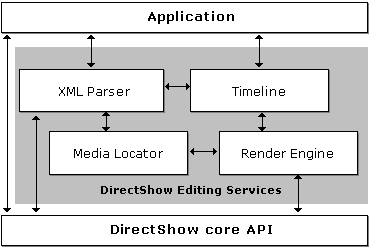

[The feature associated with this page, DirectShow, is a legacy feature. It has been superseded by MediaPlayer, IMFMediaEngine, and Audio/Video Capture in Media Foundation. Those features have been optimized for Windows 10 and Windows 11. Microsoft strongly recommends that new code use MediaPlayer, IMFMediaEngine and Audio/Video Capture in Media Foundation instead of DirectShow, when possible. Microsoft suggests that existing code that uses the legacy APIs be rewritten to use the new APIs if possible.]
[This API is not supported and may be altered or unavailable in the future.]
The following illustration shows the architecture of DirectShow Editing Services (DES).

The timeline is an abstract description of a video editing project. It specifies the source clips used in the project, start and stop times, effects and transitions, and so forth. The timeline does not render the video and audio streams, however. Instead, the render engine translates the timeline into a filter graph, for either preview or file output. An application manipulates the timeline rather than directly manipulating the filter graph, which would be cumbersome and error prone.
The following table lists the main tasks that a typical video editing application performs, along with the interfaces that support each task. Later sections describe these tasks and the interfaces in more detail.
| Task | Interface(s) |
|---|---|
| Construct or modify a timeline. | IAMTimeline and the other IAMTimelineXXXX interfaces |
| Save and load project files. | IXml2Dex |
| Preview a project or write it to a file. | IRenderEngine, ISmartRenderEngine |
Â
In addition, an application might perform some or all of the following secondary tasks.
| Task | Interface(s) |
|---|---|
| Obtain information about media files. (Number of streams; format and duration of each stream.) | IMediaDet |
| Set properties on transitions and effects. | IPropertySetter |
| Receive notification when errors occur during rendering. | IAMSetErrorLog, IAMErrorLog |
| Retrieve poster frames. | IMediaDet, ISampleGrabber |
Â
Getting Started with DirectShow Editing Services
Â
Â